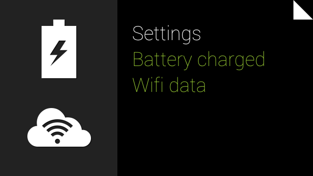
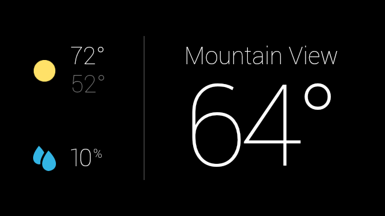
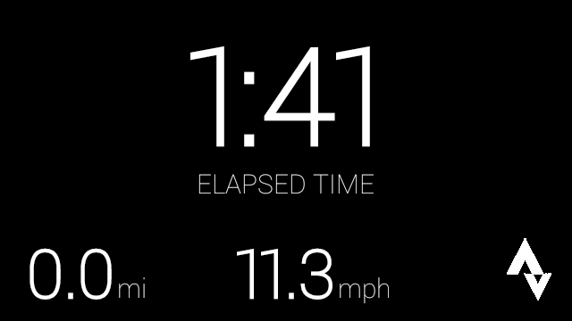
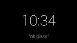
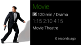
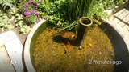
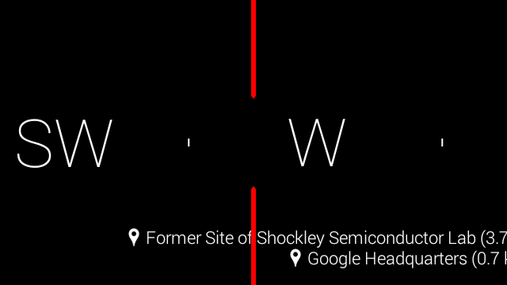

This section goes over the major UI components of Glass, when they are useful, and how users interact with them.
The timeline is the main user interface that is exposed to users and is comprised of 640 × 360 pixel cards. It provides many features such as a standard way to present live and static cards, system-wide voice commands, and a common way to launch Glassware.
Users scroll through different sections of the timeline to reveal cards in the past, present, and future. The most recent items reside closest to the Home card, which is the default card users see when they wake Glass up.
| Settings | Present/Future | Home | Past | |||
|---|---|---|---|---|---|---|
|  |  |  |  |  |  |
Timeline cards appear in the following sections, based on the card’s temporality and type.
The default Home card is the Glass clock and it resides in the center of the timeline. For the most part, it appears whenever users wake Glass up.
It provides system-wide voice and touch commands for users to start other pieces of Glassware. The Glass clock card never leaves the Home area of the timeline because it provides access to the entire Glass system.
To the right of the Glass clock is the history section, which displays only static cards. This is because live cards are always considered to be in the present, so they never appear here.
Static cards naturally decay in the past section. As new cards enter the past section, they appear closest to the clock. Glass pushes older cards farther to the right where users rarely scroll and removes cards older than 7 days or when the 200 card limit is reached.
To the left of the Glass clock is the present and future section, which contain both static and live cards.
Figure 1: Strava Cycling shows a live card that continuously updates the time, distance, and speed of a bike ride as it happens.
Live cards display information that is relevant to users at the current moment and always appear in this section. When a live card has focus and Glass sleeps, that card becomes the default card that appears when Glass wakes up.
Static cards that have future timestamps or are “pinned” also appear in the present and future section. Google Now cards are an example of pinned cards that
Figure 2: The Google Now weather card shows relevant information automatically.
At the farthest left of the timeline is the Settings bundle, where you can configure system-wide Glass settings, such as volume and Wi-Fi networks.
Live cards can update frequently with custom graphics to show users real-time information. This functionality is great for UIs that need to constantly update based on some user data.
Live cards also have access to low-level sensor data like the accelerometer and GPS, which unlocks new types of user interactions and features that aren’t possible with static cards.

Figure 3: The Compass uses sensors and renders custom graphics to create a unique user experience.
In addition, live cards run inside the timeline, so users can scroll left and right to view and interact with other cards while the live card is running. This allows users to multitask and seamlessly maintain the live card’s running state in the background.
Static cards are simple chunks of information that you can build with HTML, text, images, and video. They do not update frequently, if at all, and are designed for quick notifications.
 |
 |
 |
Static cards can have a share menu item that allows users to share the card with people or other Glassware. You can declare your Glassware timeline cards to be shareable and also define a contact for your Glassware that can accept shared timeline items.
 |
 |
When you momentarily need full control over the user experience, immersions can run outside of the timeline experience. This allows you to render your own UI and process all of the user input. Immersions are great for Glassware that cannot function within the constraints of the timeline.

Both cards and immersions can contain menu items that carry out associated actions, such as sharing, replying, dismissing, and much more.

Portions of this page are reproduced from work created and shared by Google and used according to terms described in the Creative Commons 4.0 Attribution License.